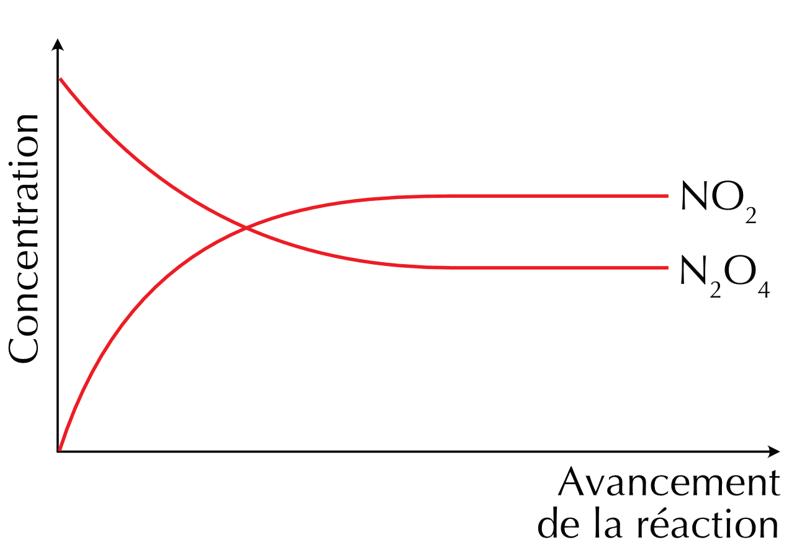
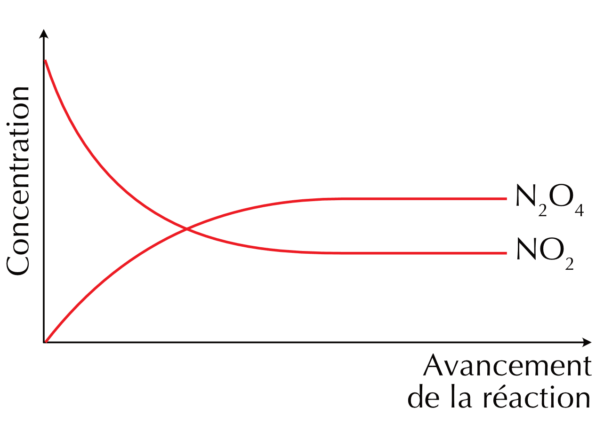
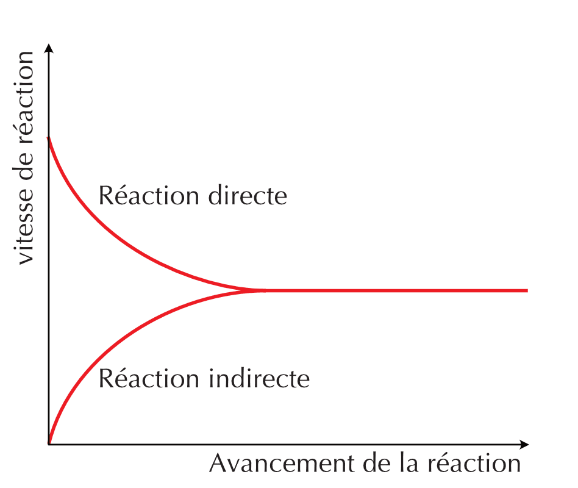
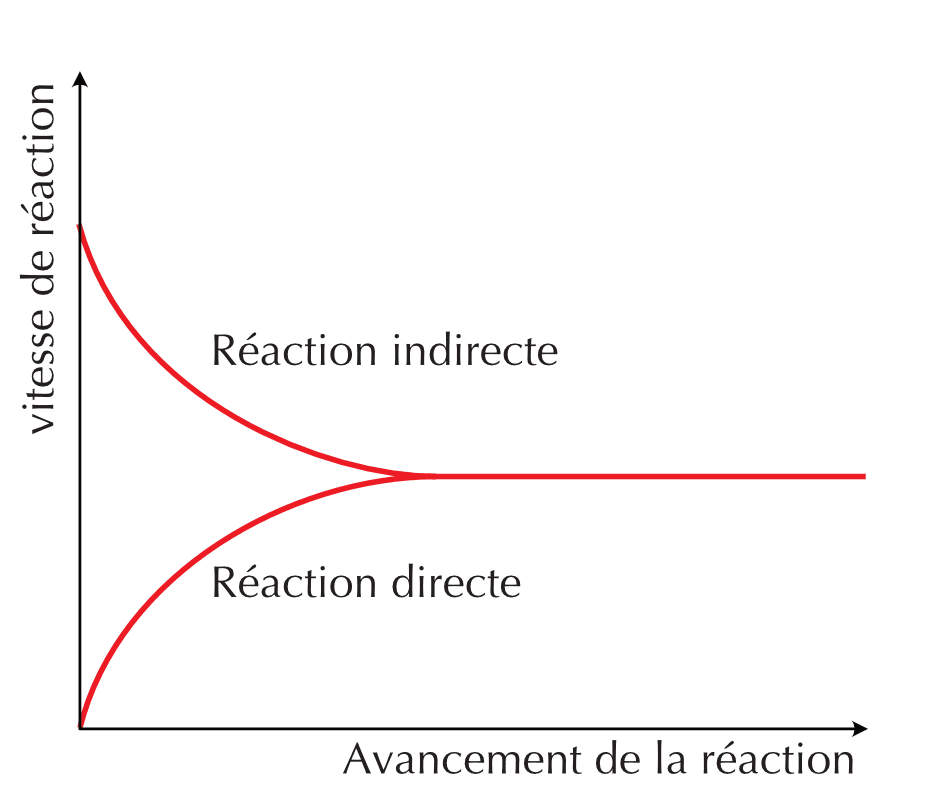
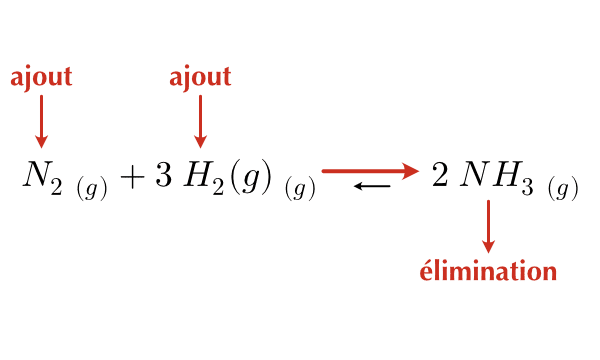
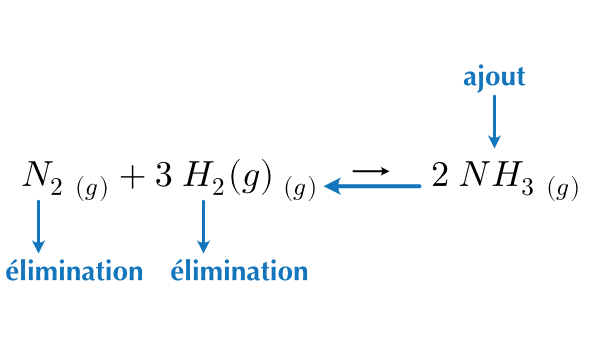
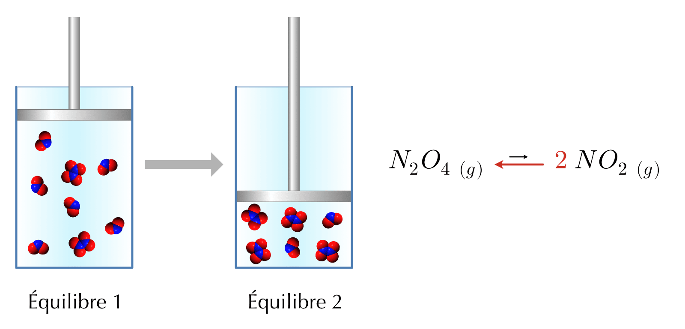
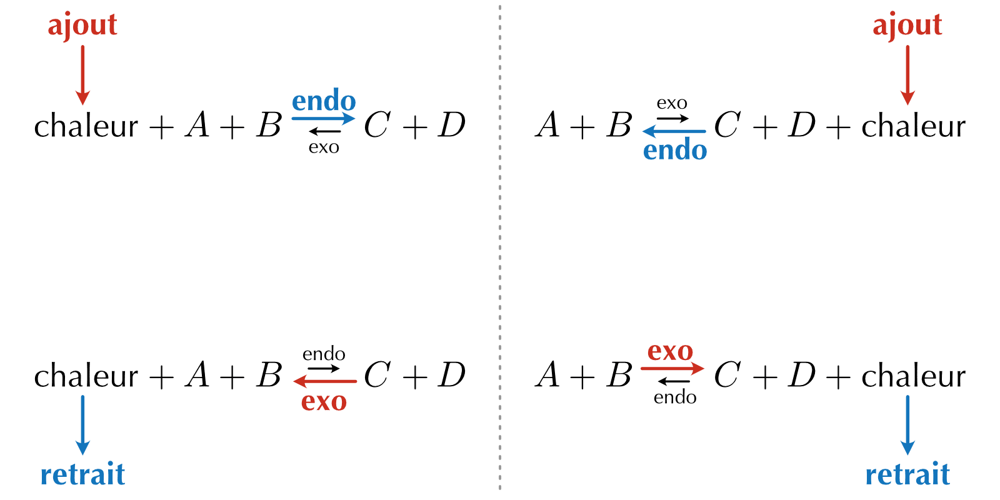

16 L’équilibre chimique
- Expliquer la notion d’équilibre chimique et comment elle est liée aux vitesses de réaction.
- Écrire l’expression de la constante d’équilibre associée à une équation chimique.
- Prédire le sens d’une réaction à partir de la constante d’équilibre et des concentrations des réactifs et produits.
- Calculer les concentrations d’équilibre à partir de la constante d’équilibre et de concentrations.
- Utiliser le principe de Le Châtelier pour prévoir l’évolution d’un système chimique à l’équilibre.
Dans le cas d’une réaction irréversible, les réactifs sont consommés et les produits sont produits. C’est ce que nous avons appelé la réaction directe. Dans le cas d’une réaction réversible, les produits peuvent également être consommés pour produire des réactifs. C’est ce que nous avons appelé la réaction indirecte. Un équilibre chimique est un état de la réaction dans lequel les réactions directe et indirecte se produisent à la même vitesse et où les concentrations des réactifs et des produits ne varient pas avec le temps.
Équilibre chimique
Un équilibre chimique est un état dans lequel la vitesse de la réaction directe est égale à celle de la réaction indirecte.
Considérons par exemple la décomposition du tétroxyde de diazote (N2O4) en dioxyde d’azote (NO2). Ce processus, comme beaucoup de réactions chimiques, est réversible :
\[ N_2O_4\ {}_{(g)} \leftrightharpoons 2\ NO_2\ {}_{(g)} \]
N2O4 est un gaz incolore, alors que NO2 est un gaz de couleur brun orangé.
Pour étudier cet équilibre, nous allons considérer la cinétique de la réaction. Les réactions directe et indirecte s’effectuent en une seule étape, nous pouvons donc écrire les lois de vitesse de chaque réaction :
\[ \begin{split} v_{directe} = k_{directe} \cdot |N_2O_4| \end{split} \qquad \text{ et } \qquad \begin{split} v_{indirecte} = k_{indirecte} \cdot |NO_2|^2 \end{split} \]


Le terme équilibre est généralement employé pour décrire un état sans changement. Ce type d’équilibre est un état d’équilibre statique puisqu’il caractérise l’état d’un système immobile. Cependant, un système à l’équilibre n’est pas toujours sans changement, comme, justement, un équilibre chimique.
À l’échelle macroscopique, on ne voit pas de changement alors qu’à l’échelle sub-microscopique les réactions directes et indirectes continuent d’avoir lieu. Les vitesses directe et indirecte sont non-nulles et égales.


Un état d’équilibre chimique est appelé état d’équilibre dynamique car, bien que les concentrations de réactifs et de produits ne varient pas avec le temps, les réactions directe et indirecte continuent de se produire.
Répondez aux questions suivantes sur l’équilibre chimique.
- Qu’est-ce qui caractérise un équilibre chimique du point de vue des vitesses de réaction ?
- À l’équilibre, les réactions directe et indirecte s’arrêtent-elles ? Justifiez.
- Pourquoi parle-t-on d’équilibre « dynamique » et non « statique » ?
- À l’équilibre, les concentrations des réactifs et des produits sont-elles nécessairement égales ?
- À l’équilibre, la vitesse de la réaction directe est égale à la vitesse de la réaction indirecte.
- Non : à l’échelle microscopique, les deux réactions continuent de se produire, mais à la même vitesse. Les vitesses directe et indirecte sont non nulles et égales.
- Parce que les concentrations restent constantes à l’échelle macroscopique (comme un équilibre statique), mais que les réactions directe et indirecte se poursuivent en permanence à l’échelle microscopique.
- Non : à l’équilibre, les concentrations ne varient plus, mais elles ne sont pas nécessairement égales entre elles. Ce sont les vitesses (et non les concentrations) qui sont égales.
16.1 Le quotient de réaction
Au milieu du XIXe siècle, Cato Guldberg et Peter Waage ont étudié les équilibres chimiques d’une grande variété de réactions. Ils ont observé qu’à température constante, dans un mélange à l’équilibre de réactifs et de produits, quelles que soient les concentrations initiales, le quotient de réaction a une valeur constante.
Le quotient de réaction (Qr) est une grandeur qui permet de caractériser un système chimique. Il est défini comme le quotient du produit des concentrations des produits et du produit des concentrations des réactifs, chaque concentration étant portée à une puissance égale au coefficient stœchiométrique correspondant de l’équation chimique équilibrée. Cette grandeur nous donne une information sur les quantités relatives de produits et de réactifs lors d’une réaction à un instant t.
Considérons un système chimique à l’équilibre, dont les espèces sont toutes dissoutes dans l’eau et dont l’équation de la réaction est la suivante :
\[ a\ A_{(aq)} + b\ B_{(aq)} \leftrightharpoons c\ C_{(aq)} + d\ D_{(aq)} \]
Par définition, le quotient de réaction de cette transformation s’écrit :
\[ Q_{r}(t) = \frac{|C|_{(t)}^{c} \cdot |D|_{(t)}^{d}}{|A|_{(t)}^{a} \cdot |B|_{(t)}^{b}} \]
Les concentrations des espèces dissoutes sont exprimées en mole par litre (mol/L).
16.2 La constante d’équilibre
À l’équilibre, les concentrations des réactifs et des produits ne varient plus ce qui implique que le quotient de réaction ne varie plus, lui non plus. Il devient constant. On appellera la valeur de Qr à l’équilibre, constante d’équilibre (K).
\[ K = Q_{r}(eq) = \frac{|C|_{(eq)}^{c} \cdot |D|_{(eq)}^{d}}{|A|_{(eq)}^{a} \cdot |B|_{(eq)}^{b}} \]
- Comme le quotient de réaction, la constante d’équilibre n’a pas de dimension et s’exprime sans unité.
- Une constante d’équilibre élevée (K > 103) indique que les produits sont favorisés à l’équilibre.
- Une constante d’équilibre faible (K < 10-3) indique que les réactifs sont favorisés à l’équilibre.
- K ne dépend que de la température.
La valeur de K peut donc être calculée lorsque l’on a mesuré les concentrations des réactifs et produits à l’équilibre pour une température donnée. Pour simplifier l’écriture, à l’équilibre, on pourra écrire :
\[ K = \frac{|C|^{c} \cdot |D|^{d}}{|A|^{a} \cdot |B|^{b}} \]
Ecrivez l’expression de la constante d’équilibre pour les réactions suivantes.
- \(\ce{ A + 2 B <=> C + D}\)
- \(\ce{2 C <=> E}\)
- \(\ce{A + E <=> 2 D}\)
- \(\ce{2 NO + O2 <=> 2 NO2}\)
- \(\ce{N2O4 <=> 2 NO2}\)
- \(\ce{2 SO2 + O2 <=> 2 SO3}\)
- \(\ce{Fe^{3+} + SCN^{-} <=> Fe(SCN)^{2+}}\)
- \[ K = \frac{|\ce{C}| \cdot |\ce{D}|}{|\ce{A}| \cdot |\ce{B}|^2} \]
- \[ K = \frac{|\ce{E}|}{|\ce{C}|^2} \]
- \[ K = \frac{|\ce{D}|^2}{|\ce{A}| \cdot |\ce{E}|} \]
- \[ K = \frac{|\ce{NO2}|^2}{|\ce{NO}|^2 \cdot |\ce{O2}|} \]
- \[ K = \frac{|\ce{NO2}|^2}{|\ce{N2O4}|} \]
- \[ K = \frac{|\ce{SO3}|^2}{|\ce{SO2}|^2 \cdot |\ce{O2}|} \]
- \[ K = \frac{|\ce{Fe(SCN)}^{2+}|}{|\ce{Fe}^{3+}| \cdot |\ce{SCN^-}|} \]
16.2.1 Équilibre homogène et hétérogène
Lorsque toutes les substances participant à la réaction sont dans la même phase, on parlera d’équilibre homogène et lorsque toutes les substances participant à la réaction sont dans des phases différentes, on parlera d’équilibre hétérogène.
Lors du calcul des constantes d’équilibre, les solides et les liquides purs ne sont pas pris en compte car leur concentration ne change pas au cours de la réaction.
Ecrivez l’expression de la constante d’équilibre pour les réactions suivantes.
- \(\ce{CaCO3_{(s)} <=> CaO_{(s)} + CO2_{(g)}}\)
- \(\ce{2 NOCl_{(g)} <=> 2 NO_{(g)} + Cl2_{(g)}}\)
- \(\ce{Fe(OH)3_{(s)} <=> Fe^{3+}_{(aq)} + 3 OH^-_{(aq)}}\)
- \(\ce{NH3_{(aq)} + H2O_{(l)} <=> NH4+_{(aq)} + OH^-_{(aq)}}\)
- \(\ce{PbCl2_{(s)} <=> Pb^{2+}_{(aq)} + 2 Cl^-_{(aq)}}\)
- \(\ce{H2_{(g)} + I2_{(s)} <=> 2 HI_{(g)}}\)
- \(\ce{2 NaHCO3_{(s)} <=> Na2CO3_{(s)} + CO2_{(g)} + H2O_{(g)}}\)
- \(\ce{Ag2CO3_{(s)} <=> 2 Ag+_{(aq)} + CO3^{2-}_{(aq)}}\)
- \[ K = |\ce{CO2}| \]
- \[ K = \frac{|\ce{NO}|^2 \cdot |\ce{Cl2}|}{|\ce{NOCl}|^2} \]
- \[ K = |\ce{Fe}^{3+}| \cdot |\ce{OH}^-|^3 \]
- \[ K = \frac{|\ce{NH4}^+| \cdot |\ce{OH}^-|}{|\ce{NH3}|} \]
- \[ K = |\ce{Pb}^{2+}| \cdot |\ce{Cl}^-|^2 \]
- \[ K = \frac{|\ce{HI}|^2}{|\ce{H2}|} \]
- \[ K = |\ce{CO2}| \cdot |\ce{H2O}| \]
- \[ K = |\ce{Ag}^+|^2 \cdot |\ce{CO3}^{2-}| \]
16.2.2 Constantes d’équilibre et phase gazeuse
Nous avons exprimé jusqu’à présent les constantes d’équilibre en utilisant la concentration. Cependant, pour les réactions en phase gazeuse, nous pouvons exprimer les constantes d’équilibre en utilisant les pressions partielles des gaz impliqués.
La loi des pressions partielles exprime que la pression d’un gaz est directement proportionnelle à sa concentration (pour un volume et une température constants). Dans un mélange de gaz, la pression partielle d’un gaz composant le mélange est la pression avec laquelle il contribue à la pression totale.
Supposons la réaction en phase gazeuse générique équilibrée ci-dessous :
\[ a\ A_{(g)} + b\ B_{(g)} \leftrightharpoons c\ C_{(g)} + d\ D_{(g)} \]
Si nous connaissons les pressions partielles de chaque composant à l’équilibre, alors l’expression de la constante d’équilibre pour cette réaction peut-être expimée par la relation suivante :
\[ K = \frac{P_C^{c} \cdot P_D^{d}}{P_A^{a} \cdot P_B^{b}} \]
avec :
- PA : pression partielle du gaz A dans le système.
- PB : pression partielle du gaz B dans le système.
- …
16.2.3 Formalisme littéral
Pour exprimer la constante d’équilibre :
- nous utiliserons \(K_c\) lorsque la constante d’équilibre est exprimée à partir de concentrations
- nous utiliserons \(K_p\) lorsque la constante d’équilibre est exprimée à partir des pressions partielles.
| Concentrations, \(K_c\) | Pressions partielles, \(K_p\) |
|---|---|
| \(K_c = \frac{|C|^{c} \cdot |D|^{d}}{|A|^{a} \cdot |B|^{b}}\) | \(K_p = \frac{P_C^{c} \cdot P_D^{d}}{P_A^{a} \cdot P_B^{b}}\) |
Ecrivez l’expression de la constante d’équilibre (Kc ou Kp) pour les réactions suivantes. Dans chaque cas, indiquez si la réaction est homogène ou hétérogène.
- \(3\ NO\ _{(g)} \leftrightharpoons N_2O\ _{(g)} + NO_2\ _{(g)}\)
- \(CH_4\ _{(g)} + 2\ H_2S\ _{(g)} \leftrightharpoons CS_2\ _{(g)} + 4\ H_2\ _{(g)}\)
- \(HF\ _{(aq)} \leftrightharpoons H^+\ _{(aq)} + F^-\ _{(aq)}\)
- \(2\ NaHCO_3\ _{(s)} \leftrightharpoons Na_2CO_3\ _{(s)} + CO_2\ _{(g)} + H_2O\ _{(g)}\)
- \(H_2O\ _{(l)} \leftrightharpoons H^+\ _{(aq)} + OH^-\ _{(aq)}\)
- \(2\ Ag\ _{(s)} + Zn^{2+}\ _{(aq)} \leftrightharpoons 2\ Ag^+\ _{(aq)} + Zn\ _{(s)}\)
- \[ K_{p} = \frac{P_{\ce{N2O}} \cdot P_{\ce{NO2}}}{P_{\ce{NO}}^{3}} \qquad \text{(homogène)} \]
- \[ K_{p} = \frac{P_{\ce{CS2}} \cdot P_{\ce{H2}}^{4}}{P_{\ce{CH4}} \cdot P_{\ce{H2S}}^{2}} \qquad \text{(homogène)} \]
- \[ K_{c} = \frac{|H^+| \cdot |F^-|}{|HF|} \qquad \text{(homogène)} \]
- \[ K_{p} = P_{CO_2} \cdot P_{H_2O} \qquad \text{(hétérogène)} \]
- \[ K_{c} = |H^+| \cdot |OH^-| \qquad \text{(hétérogène)} \]
- \[ K_{c} = \frac{|Ag^+|^{2}}{|Zn^{2+}|} \qquad \text{(hétérogène)} \]
16.3 Équilibres chimiques et stœchiométrie
En cherchant à mesurer la constante d’équilibre de la décomposition de l’iodure d’hydrogène, on remplit un ballon sous vide de 2 l avec 0.2 mol de \(HI\) gazeux et on laisse la réaction se dérouler à 453°C.
\[ 2\ HI\ _{(g)} \leftrightharpoons H_2\ _{(g)} + I_2\ _{(g)} \]
À l’équilibre, on mesure une concentration en iodure d’hydrogène, \(|HI|_{eq}\) = 0.078 M.
On commence par calculer la concentration initiale en iodure d’hydrogène, \(|HI|_{0}\).
\[ |HI|_0 = \frac{0.2\ \text{ mol}}{2\ \text{ l}} = 0.1\ M \]
On peut ensuite établir un tableau des variations :
| Concentrations M | \(2\ HI\ _{(g)}\) | \(\leftrightharpoons\) | \(H_2\ _{(g)}\) | \(I_2\ _{(g)}\) |
|---|---|---|---|---|
| initiale | 0.1 | 0 | 0 | |
| variation | - 2x | + x | + x | |
| équilibre | 0.1 - 2x | x | x |
On connaît la valeur de la concentration de \(HI\) à l’équilibre. On peut donc résoudre l’équation pour x :
\[ |HI|_{eq} = 0.1\ M - 2 \cdot x = 0.078\ M \quad \rightarrow \quad x = 0.011\ M \]
Par conséquent, les concentrations à l’équilibre sont :
\[ |H_2|_{eq} = |I_2|_{eq} = 0.011\ M \quad \text{et} \quad |HI|_{eq} = 0.078\ M \]
On peut donc calculer la valeur de la constante d’équilibre de la réaction à 453°C.
\[ K_{c} = \frac{|H_2|_{eq} \cdot |I_2|_{eq}}{|HI|_{eq}^2} = \frac{0.011 \cdot 0.011}{0.078^2} = 0.02\ \text{à 453°C} \]
On étudie la réaction entre l’ammoniac et le dioxygène
\[ 4\ NH_3\ _{(g)} + 7\ O_2\ _{(g)} \leftrightharpoons 2\ N_2O_4\ _{(g)} + 6\ H_2O\ _{(g)} \]
On remplit un ballon avec 2.4 M de NH3 et 2.4 M de O2 à une température donnée. La réaction se déroule et à l’équilibre on mesure une concentration en N2O4 égale à 0.134 M. Calculer Kc.
\[ \begin{split} \text{Concentrations M} &\\ \text{initiale} &\\ \text{variation} &\\ \text{équilibre} & \end{split} \quad \begin{split} 4\ NH_3\ _{(g)} &\\ 2.4 &\\ -4\ x &\\ 2.4 - 4x & \end{split} \quad \begin{split} 7\ O_2\ _{(g)} &\\ 2.4 &\\ -7\ x &\\ 2.4 - 7x & \end{split} \quad \begin{split} \leftrightharpoons &\\ ~ &\\ ~ &\\ ~ & \end{split} \quad \begin{split} 2\ N_2O_4\ _{(g)}\\ 0 &\\ +2\ x &\\ 2x & \end{split} \quad \begin{split} 6\ H_2O\ _{(g)}\\ 0 &\\ +6\ x &\\ 6x & \end{split} \]
\[ \begin{split} |N_2O_4|_{eq} &= 2x = 0.134\ M \\ \Rightarrow x &= 0.067\ M \\ |NH_3|_{eq} &= 2.4 – 4x = 2.4 – 4 \cdot 0.067 = 2.13\ M \\ |O_2|_{eq} &= 2.4 – 7x = 2.4 – 7 \cdot 0.067 = 1.93\ M \\ |H_2O|_{eq} &= 6x = 6 \cdot 0.067 = 0.402\ M \end{split} \]
\[ K_{c} = \frac{|N_2O_4|^{2}_{eq} \cdot |H_2O|^{6}_{eq}}{|NH_3|^{4}_{eq} \cdot |O_2|^{7}_{eq}} = \frac{(0.134)^2 \cdot (0.402)^{6}}{(2.13)^{4} \cdot (1.93)^{7}} = 3.69 \cdot 10^{−8} \]
À une certaine température, la constante d’équilibre de la réaction \(\ce{H2_{(g)} + I2_{(g)} <=> 2 HI_{(g)}}\) vaut \(K_c = 49\). On introduit dans un récipient 1.0 mol/L de \(\ce{H2}\) et 1.0 mol/L de \(\ce{I2}\) (aucun HI au départ).
- Établissez le tableau de variations (en fonction de \(x\)).
- À l’aide de la constante d’équilibre, déterminez \(x\).
- Donnez les concentrations des trois espèces à l’équilibre.
- Tableau de variations (mol/L) :
- initiale : \(|\ce{H2}| = 1.0\), \(|\ce{I2}| = 1.0\), \(|\ce{HI}| = 0\)
- variation : \(-x\), \(-x\), \(+2x\)
- équilibre : \(1.0 - x\), \(1.0 - x\), \(2x\)
- \[ K_c = \frac{|\ce{HI}|^2}{|\ce{H2}| \cdot |\ce{I2}|} = \frac{(2x)^2}{(1.0 - x)^2} = 49 \] En prenant la racine : \(\dfrac{2x}{1.0 - x} = 7 \Rightarrow 2x = 7(1.0 - x) \Rightarrow 9x = 7 \Rightarrow x = 0.78\) mol/L.
- \(|\ce{H2}| = |\ce{I2}| = 1.0 - 0.78 = 0.22\) mol/L ; \(|\ce{HI}| = 2 \cdot 0.78 = 1.56\) mol/L.
16.4 Évolution spontanée et principe de Le Châtelier
Le principe de Le Châtelier permet de prédire le sens de la réaction qui sera favorisé lorsqu’on modifie les conditions d’un système à l’équilibre.
“Lorsque les modifications extérieures apportées à un système physico-chimique en équilibre provoquent une évolution vers un nouvel état d’équilibre, l’évolution s’oppose aux perturbations qui l’ont engendrée et en modère l’effet.”
— Henry Louis Le Châtelier
Dit autrement : si on modifie les conditions d’un système à l’équilibre, il réagit de façon à s’opposer aux changements qu’on lui impose jusqu’à l’établissement d’un nouvel état d’équilibre.
Pour modifier un équilibre, on peut agir sur différents facteurs :
- L’addition d’un réactif ou d’un produit.
- L’élimination d’un réactif ou d’un produit.
- Un changement de volume ou de pression du système
(pour les systèmes contenant des réactifs et des produits gazeux). - Un changement de température.
16.4.1 Ajout/élimination d’un réactif ou d’un produit
Prenons en exemple la réaction du diazote avec le dihydrogène gazeux pour former l’ammoniac gazeux.
\[ N_2\ _{(g)} + 3\ H_2\ _{(g)} \leftrightharpoons 2\ NH_3\ _{(g)} \]
Selon le principe de Le Châtelier :
- L’ajout d’un réactif ou l’élimination d’un produit entraîne un déplacement de l’équilibre vers la droite.
- L’ajout d’un produit ou l’élimination d’un réactif entraîne un déplacement de l’équilibre vers la gauche.


- Lorsqu’on ajoute une substance, la réaction déplace l’équilibre de manière à consommer une partie de cette substance.
- Lorsqu’on élimine une substance, la réaction déplace l’équilibre de manière à produire d’avantage de cette substance.
L’ajout ou le retrait d’une espèce d’une réaction à l’équilibre ne change pas la valeur de la constante d’équilibre Kc. Le rapport des concentrations rejoindra la même valeur qu’avant la modification.
16.4.2 Influence du volume et de la pression
Prenons en exemple la décomposition du tétroxyde de diazote (N2O4) en dioxyde d’azote (NO2).
\[ N_2O_4\ {}_{(g)} \leftrightharpoons 2\ NO_2\ {}_{(g)} \]
Imaginons un cylindre fermé avec un piston mobile comme couvercle. L’équilibre ci-dessus se produit à l’intérieur du cylindre. En déplaçant le piston, on change le volume du système et on modifie les concentrations des réactifs et des produits. Si nous poussons sur le piston, l’équilibre sera perturbé et se déplacera dans la direction qui minimise l’effet de cette perturbation.

La réaction globale présente moins de moles de gaz du côté des produits. L’équilibre sera donc déplacé vers la gauche.
RAPPEL :
- Une augmentation du volume diminue la pression (\(V \uparrow\) - \(P \downarrow\)).
- Une diminution du volume augmente la pression (\(V \downarrow\) - \(P \uparrow\)).
En résumé :
Une diminution du volume de la réaction favorise la réaction (directe ou indirecte) qui diminue le nombre total de moles de gaz.
Une augmentation du volume de la réaction favorise la réaction (directe ou indirecte) qui augmente le nombre total de moles de gaz.
Si le même nombre de moles de gaz sont de chaque côté de l’équation chimique, une variation de volume (ou de pression) n’aura pas d’influence sur l’équilibre chimique.
16.4.3 Influence de la température
Un changement de concentration ou de volume peut déplacer un équilibre chimique mais il ne change pas la valeur de la constante d’équilibre. La température, par contre, influence un état d’équilibre chimique car elle modifie la valeur de la constante d’équilibre.
Dans la réaction suivante, le sens direct est endothermique (la réaction absorbe de la chaleur).
\[ \text{chaleur} + N_2O_4\ {}_{(g)} \leftrightharpoons 2\ NO_2\ {}_{(g)} \]
Si nous considérons la chaleur comme un réactif, nous pouvons appliquer le principe de Le Châtelier pour prédire dans quel sens sera déplacé l’équilibre si nous ajoutons ou retirons de la chaleur.
L’augmentation de la température (apport de chaleur) déplacera la réaction dans le sens direct, car la chaleur apparaît du côté du réactif. La diminution de la température (retrait de chaleur) déplacera la réaction dans le sens indirect.
En résumé :
Une augmentation de la température favorise le sens endothermique (direct ou indirect) d’un équilibre chimique.
Une diminution de la température favorise le sens exothermique (direct ou indirect) d’un équilibre chimique.

16.4.4 Quotient de réaction et évolution d’un système
Pour déterminer dans quel sens une réaction va évoluer pour atteindre l’équilibre, on compare la valeur du quotient de réaction \(Q_r\) à un instant \(t\) donné avec la valeur de la constante d’équilibre \(K\).
- Si \(Q_r < K\) : Le système n’est pas à l’équilibre. Pour atteindre l’équilibre, le numérateur de l’expression de \(Q_r\) (les produits) doit augmenter et le dénominateur (les réactifs) doit diminuer. La réaction évolue dans le sens direct (vers la droite).
- Si \(Q_r > K\) : Le système n’est pas à l’équilibre. Le numérateur (les produits) doit diminuer et le dénominateur (les réactifs) doit augmenter. La réaction évolue dans le sens indirect (vers la gauche).
- Si \(Q_r = K\) : Le système est à l’équilibre chimique. Les concentrations des réactifs et des produits ne varient plus au cours du temps.
Cette comparaison est particulièrement utile pour prévoir l’évolution d’un système lorsque les concentrations initiales sont connues mais que le système n’a pas encore atteint son état d’équilibre.
16.4.5 Effet d’un catalyseur sur un équilibre chimique
Un catalyseur accélère une réaction en abaissant l’énergie d’activation de la réaction. Cependant il abaisse l’énergie d’activation de la réaction directe ainsi que de la réaction indirecte, et ceci dans la même mesure. La présence d’un catalyseur ne modifie donc pas la constante d’équilibre, ni ne modifie les quantités de matières de réactifs et de produits.
L’ajout d’un catalyseur à une réaction ne modifie pas un équilibre chimique.
Si un catalyseur est ajouté à un mélange réactionnel qui n’est pas à l’équilibre le mélange atteindra l’équilibre plus rapidement.
\[ 2\ SO_2\ _{(g)} + O_2\ _{(g)} \leftrightharpoons 2\ SO_3\ _{(g)} + \text{chaleur} \]
Dans la réaction ci-dessus, on favorise le rendement en SO3 :
- lorsque l’on augmente ou abaisse la pression ? (justifiez)
- lorsque l’on augmente ou abaisse la température ? (justifiez)
- L’équilibre est favorisé à droite en augmentant la pression pour réduire le nombre total de moles de gaz.
- L’équilibre est favorisé à droite en abaissant la température pour favoriser le sens exothermique.
\[ C\ _{(s)} + 2\ H_2\ _{(g)} \leftrightharpoons CH_4\ _{(g)} + \text{chaleur} \]
Quels sont les effets des changements énoncés ci-dessous sur cet équilibre chimique ?
- Une augmentation de température. (justifiez)
- Une augmentation de la pression en diminuant le volume. (justifiez)
- Permettre au CH4 de s’échapper en continu du réacteur abritant la réaction. (justifiez)
- L’équilibre favorise la production de réactifs en favorisant le sens exothermique de la réaction.
- L’équilibre favorise la production de produits pour diminuer le nombre totale de moles de gaz.
- L’équilibre favorise la production de produits de manière à produire plus de CH4.
16.5 Résumé
- Un équilibre chimique est un état dynamique : la vitesse de la réaction directe est égale à celle de la réaction indirecte. Les concentrations des réactifs et des produits ne varient plus (mais les deux réactions se poursuivent).
- Le quotient de réaction caractérise l’état d’un système à un instant donné. À l’équilibre il devient constant : c’est la constante d’équilibre \(K\).
- Dans l’expression de \(K\), les solides et les liquides purs ne sont pas pris en compte. Pour les gaz, on utilise les concentrations (\(K_c\)) ou les pressions partielles (\(K_p\)).
- On calcule \(K\) à partir des concentrations d’équilibre, ou inversement les concentrations d’équilibre à partir de \(K\) et des concentrations initiales.
- On prédit le sens d’évolution en comparant \(Q_r\) et \(K\) : si \(Q_r < K\), la réaction évolue dans le sens direct ; si \(Q_r > K\), dans le sens indirect ; si \(Q_r = K\), le système est à l’équilibre.
- Principe de Le Châtelier : un système à l’équilibre perturbé évolue de façon à s’opposer à la perturbation.
16.6 Exercices supplémentaires
Soit l’équilibre chimique suivant :
\[ \ce{N2_{(g)} + 3 H2_{(g)} <=> 2 NH3_{(g)}} \]
La constante d’équilibre de cette réaction à la température à laquelle elle se déroule est \(K_p = 6\cdot 10^{5}\).
Supposons que les pressions partielles initiales des gaz dans le réacteur où a lieu le réaction soient :
- \(P_{\ce{N2}} = 0.50\ atm\)
- \(P_{\ce{H2}} = 0.80\ atm\)
- \(P_{\ce{NH3}} = 0.10\ atm\)
- Calculez le quotient de réaction \(Q_p\) pour l’état initial.
- Déterminez si la réaction se déroulera dans le sens direct ou dans le sens indirect pour atteindre l’équilibre (Justifiez votre réponse à l’aide des valeurs de \(Q_p\) et \(K_p\)).
Le quotient de réaction \(Q_p\) est donné par : \[ \begin{split} Q_p &= \frac{P_{\ce{NH3}}^2}{P_{\ce{N2}} \cdot P_{\ce{H2}}^3} \\ &= \frac{(0.10)^2}{0.50 \cdot (0.80)^3} \\ &= \frac{0.01}{0.50 \cdot 0.512} = \frac{0.01}{0.256} = 0.039 \end{split} \]
Sens de la réaction :
Puisque \(Q_p = 0.039\) et \(K_p = 6 \cdot 10^{5}\), nous observons que : \[ Q_p < K_p \] La réaction se poursuit dans le sens direct pour atteindre l’équilibre. Cela signifie que davantage de \(\ce{NH3}\) sera produit au fur et à mesure que \(\ce{N2}\) et \(\ce{H2}\) seront consommés jusqu’à ce que le système atteigne l’équilibre.
De l’oxychlorure d’azote pur (\(\ce{NOCl}\)) gazeux est chauffé à 240°C dans un récipient de 1 L et donne lieu à l’équilibre chimique suivant :
\[ \ce{2 NOCl_{(g)} <=> 2 NO_{(g)} + Cl_{2(g)}} \]
À l’équilibre, la pression totale est de 1 atm et la pression du \(\ce{NOCl}\) est de 0.64 atm.
- Calculer les pressions partielles de et de dans le système.
- Calculer la constante d’équilibre Kp.
- \[ \begin{split} P_{Tot} &= P_{\ce{NOCl}} + P_{\ce{NO}} + P_{\ce{Cl2}} \\ P_{\ce{NO}} + P_{\ce{Cl2}} &= P_{Tot} - P_{\ce{NOCl}} \\ &= 1\ \text{ atm} - 0.64\ \text{ atm} = 0.36\ \text{ atm} \end{split} \qquad \begin{split} \frac{n_{\ce{NO}}}{n_{\ce{Cl2}}} &= \frac{2}{1} \\ P_{\ce{NO}} &= 2 \cdot P_{\ce{Cl2}} \end{split} \]
\[ \begin{split} P_{\ce{NO}} &= \frac{2}{3} \cdot 0.36\ \text{ atm} = 0.24\ \text{ atm} \\ P_{\ce{Cl2}} &= \frac{1}{3} \cdot 0.36\ \text{ atm} = 0.12\ \text{ atm} \end{split} \]
- \[ \begin{split} K_{p} = \frac{P_{\ce{NO}}^2 \cdot P_{\ce{Cl2}} }{P_{\ce{NOCl}}^2} = \frac{(0.24)^2\ \text{ atm} \cdot 0.12\ \text{ atm}}{(0.64)^2\ \text{ atm}} = 0.017 \end{split} \]
Dans une usine de production d’ammoniac, le procédé Haber-Bosch est utilisé pour synthétiser \(\ce{NH3}\) à partir de diazote \(\ce{N2}\) et de dihydrogène \(\ce{H2}\) gazeux selon la réaction réversible :
\[ \ce{N2_{ (g)}} + 3 \ce{H2_{ (g)}} \ce{<=>} 2 \ce{NH3_{ (g)}} \]
Dans un réacteur de 10.0 L, on introduit initialement 2.0 moles de \(\ce{N2}\) et 6.0 moles de \(\ce{H2}\) à une température de 450°C. Après que le système a atteint l’équilibre, on analyse le contenu du réacteur et on détermine que la concentration d’ammoniac est de 0.04 mol/L.
- Établissez le tableau de variations pour cette réaction en termes de concentrations molaires.
- Calculez les concentrations molaires de \(\ce{N2}\) et de \(\ce{H2}\) à l’équilibre.
- Déterminez la valeur de la constante d’équilibre \(K_c\) pour cette réaction à 450°C.
\[ \ce{N2_{ (g)}} + 3 \ce{H2_{ (g)}} \ce{<=>} 2 \ce{NH3_{ (g)}} \]
- \[ |\ce{N2}|_0 = \frac{2.0\ mol}{10.0\ L} = 0.20\ mol/L \qquad |\ce{H2}|_0 = \frac{6.0\ mol}{10.0\ L} = 0.60\ mol/L \]
\[ \begin{split} |NH_3|_{eq} &= 0.04\ mol/L \\ 2x &= 0.04\ mol/L \\ x &= 0.02\ mol/L \\ \end{split} \qquad \begin{split} |N_2|_{eq} &= 0.20 - x = 0.20 - 0.02 = 0.18\ mol/L \\ |H_2|_{eq} &= 0.60 - 3x = 0.60 - 3 \cdot 0.02 = 0.54\ mol/L \\ \end{split} \]
\[ K_c = \frac{|NH_3|_{eq}^2}{|N_2|_{eq} \cdot |H_2|_{eq}^3} = \frac{(0.04)^2}{0.18 \cdot (0.54)^3} = 5.6 \cdot 10^{-2} \]
Soit l’équilibre en phase gazeuse, exothermique dans le sens direct :
\[ \ce{2 SO2_{(g)} + O2_{(g)} <=> 2 SO3_{(g)}} \qquad (\text{sens direct : exothermique}) \]
Pour chacune des modifications suivantes, indiquez dans quel sens l’équilibre se déplace et si la constante d’équilibre \(K\) change.
- On ajoute du \(\ce{O2}\).
- On retire du \(\ce{SO3}\).
- On diminue le volume du récipient.
- On augmente la température.
- On ajoute un catalyseur.
- Ajout d’un réactif (\(\ce{O2}\)) → déplacement vers la droite (sens direct). \(K\) inchangé.
- Retrait d’un produit (\(\ce{SO3}\)) → déplacement vers la droite. \(K\) inchangé.
- Diminution du volume (augmentation de la pression) → vers le côté qui a le moins de moles de gaz : 3 mol (\(2\,\ce{SO2} + \ce{O2}\)) contre 2 mol (\(2\,\ce{SO3}\)), donc vers la droite. \(K\) inchangé.
- Augmentation de la température → favorise le sens endothermique, c’est-à-dire le sens indirect (vers la gauche). \(K\) change (il diminue).
- Ajout d’un catalyseur → aucun déplacement ; l’équilibre est simplement atteint plus vite. \(K\) inchangé.
La réaction du gaz à l’eau \(\ce{CO_{(g)} + H2O_{(g)} <=> CO2_{(g)} + H2_{(g)}}\) a une constante d’équilibre \(K_c = 4.0\) à une température donnée. On introduit 1.0 mol/L de \(\ce{CO}\) et 1.0 mol/L de \(\ce{H2O}\) (aucun produit au départ).
- Établissez le tableau de variations.
- À l’aide de \(K_c\), déterminez \(x\).
- Donnez les concentrations à l’équilibre des quatre espèces.
- Tableau de variations (mol/L) :
- initiale : \(|\ce{CO}| = 1.0\), \(|\ce{H2O}| = 1.0\), \(|\ce{CO2}| = 0\), \(|\ce{H2}| = 0\)
- variation : \(-x\), \(-x\), \(+x\), \(+x\)
- équilibre : \(1.0 - x\), \(1.0 - x\), \(x\), \(x\)
- \[ K_c = \frac{|\ce{CO2}| \cdot |\ce{H2}|}{|\ce{CO}| \cdot |\ce{H2O}|} = \frac{x^2}{(1.0 - x)^2} = 4.0 \] En prenant la racine : \(\dfrac{x}{1.0 - x} = 2 \Rightarrow x = 2(1.0 - x) \Rightarrow 3x = 2 \Rightarrow x = 0.67\) mol/L.
- \(|\ce{CO2}| = |\ce{H2}| = 0.67\) mol/L ; \(|\ce{CO}| = |\ce{H2O}| = 1.0 - 0.67 = 0.33\) mol/L.
Le procédé Haber-Bosch synthétise l’ammoniac : \(\ce{N2_{(g)} + 3 H2_{(g)} <=> 2 NH3_{(g)}}\), réaction exothermique dans le sens direct.
- Écrivez l’expression de la constante d’équilibre \(K_c\).
- Pour maximiser le rendement en \(\ce{NH3}\) à l’équilibre, faut-il travailler à haute ou à basse pression ? Justifiez.
- Pour maximiser le rendement en \(\ce{NH3}\) à l’équilibre, faut-il travailler à haute ou à basse température ? Justifiez.
- En pratique, l’industrie travaille à température assez élevée (environ 450°C) malgré la réponse à la question 3. Proposez une explication.
- \[ K_c = \frac{|\ce{NH3}|^2}{|\ce{N2}| \cdot |\ce{H2}|^3} \]
- À haute pression : le sens direct fait passer de 4 mol de gaz (\(\ce{N2} + 3\,\ce{H2}\)) à 2 mol (\(2\,\ce{NH3}\)). Une pression élevée (volume réduit) favorise le côté qui a le moins de moles de gaz, donc la formation de \(\ce{NH3}\).
- À basse température : la réaction directe étant exothermique, une diminution de température favorise le sens exothermique (formation de \(\ce{NH3}\)) et augmente \(K\).
- À basse température, l’équilibre est favorable mais la réaction est très lente. On choisit une température plus élevée (compromis) pour que l’équilibre soit atteint suffisamment vite, quitte à sacrifier une partie du rendement ; un catalyseur (fer) est également utilisé pour accélérer la réaction.